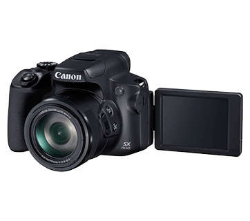
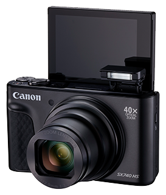
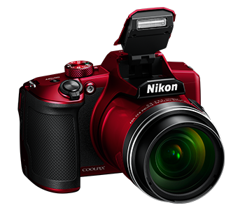
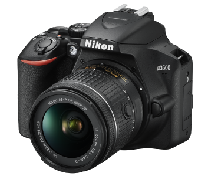
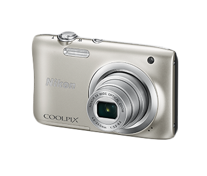

|  |
Canon PowerShot SX70 HS
40x optical zoom (24mm - 960mm) with 80x ZoomPlus
4K movie recording
DIGIC 8 processor
Wi-Fi/Bluetooth low energy
Best for Biginners
Fast response time with optical zoom
Rich verity of movie shooting
Self-portrait mode
|
₹ 41,900 |
|
 |
Canon PowerShot SX740 HS.PNG
65x optical zoom with 130x ZoomPlus
DIGIC 8 image processor
4K 30P movie recording
Wi-Fi/Bluetooth Low Energy Technology capabilities
The first SX-series camera with an OLED EVF
Up to 10 fps continuous shooting
Dual Sensing IS with up to 5 stops’ image stabilization
|
₹ 27,000 |
|
|  |
Nikon COOLPix B600
Magnification: Up to 4x(angle of view equivalent to that of approx)
Maximum aperture: f/3.3 to 6.5
Frame Coverage:99% horizontal and vertical(compared to actual picture)
Authentication: Open system, WPA2-PSK
Best for professional purpose
Shutter Type: Mechanical and CMOS electronic shutter
Formats Supported: 1080/30p, 1080/25p, 1080/60i, 1080/50i
|
₹ 36,000 |
|
 |
Nikon D3500
Magnification: 0.85 x(50 mm f/1.4 lens at infinity)
Nikon DX format; focal length of 1.5x
Frame Coverage:95% horizontal and 95% vertical
Best for professional purpose
SD, SDHC (UHS-I compliant), SDXC (UHS-I compliant)
Auto Focus Support: Autofocus is available with AF-P and type E and G AF-S lenses.
|
₹ 41,000 |
|
|  |
COOLPix A100
Lens: NIKKOR lens with5x optical zoom
Focal length: 4.6to, 23.0mm
Maximum aperture: f/3.2, to6.5
Shutter speed: 1/2000to, 1s, 4s
Best for Biginners
Frame coverage (shooting mode):98% horizontal and vertical
Digital zoom magnification: Up to 4x
|
₹ 7000 |
|
 |
Sony Z6
Sensor: 2-inch type CMOS
Resolution: 40.1MP
Lens: 12-150mm, f/1.7-3.2
Viewfinder: EVF
Best for professional purpose
Screentype: 3.3 inch tilting touchscreen
Digital zoom magnification: Up to 4x
|
₹ 70,000 |